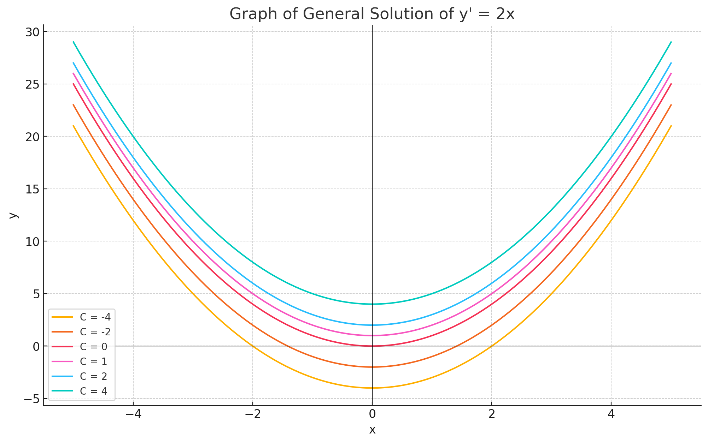
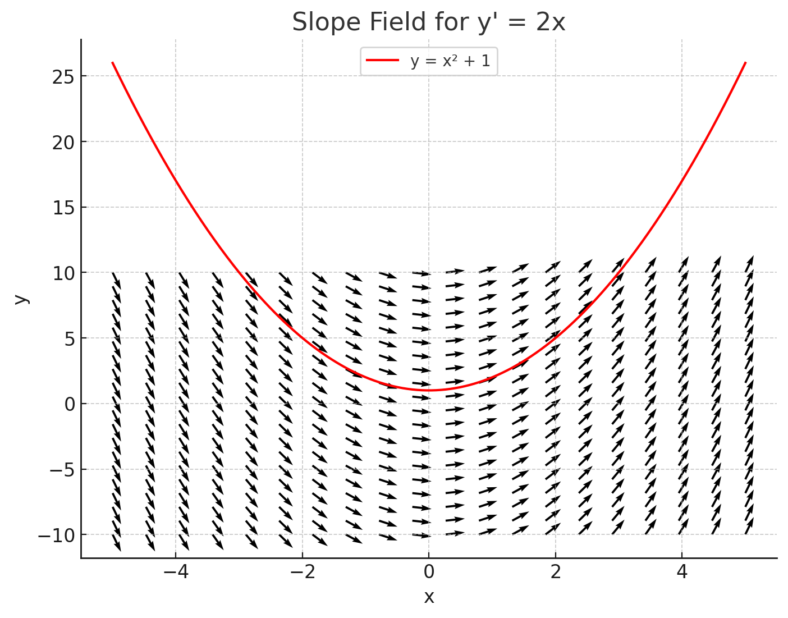
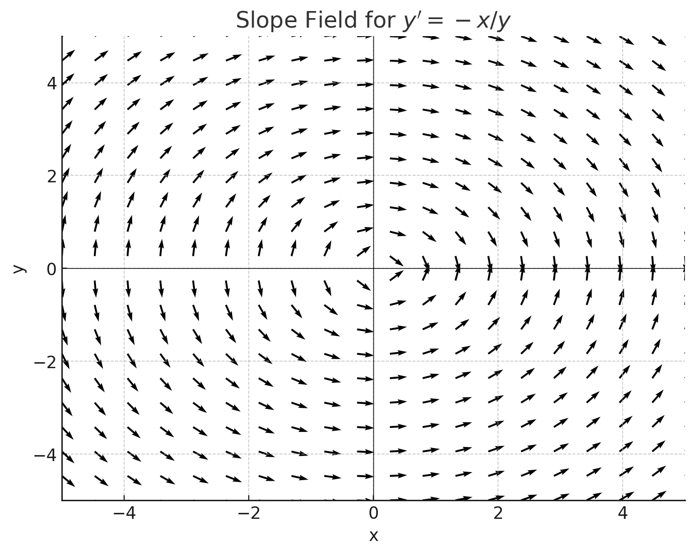
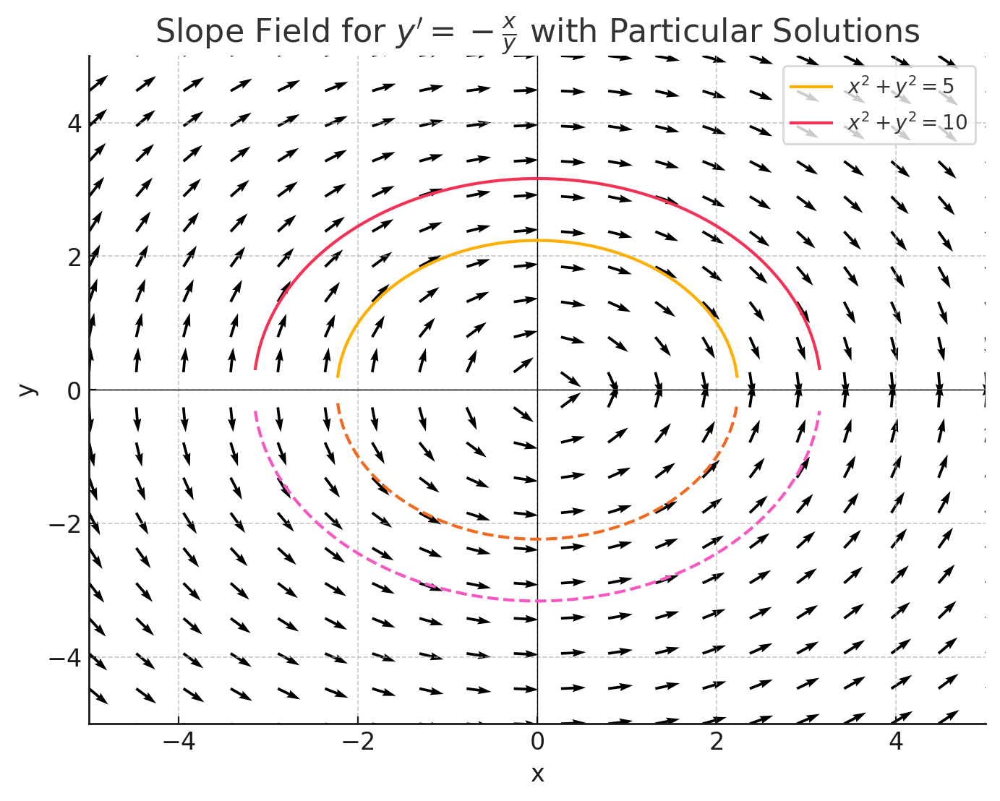
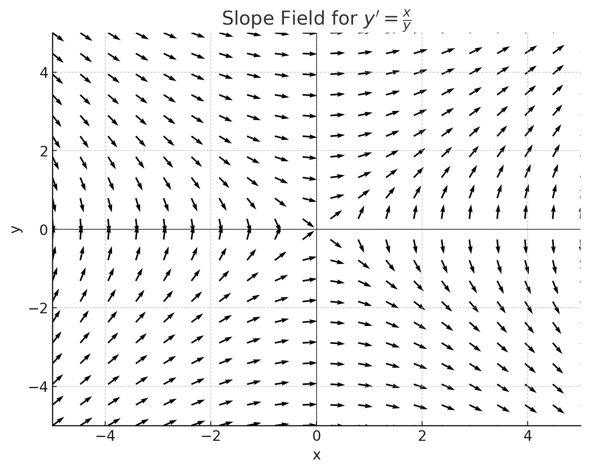

Here is an interesting way of looking at solutions to first-order differential equations. Consider the differential equation: \[ y' = 2x \] The general solution is: \[ y = \int 2x \, dx = x^2 + C \] This represents an infinite family of solutions. If we seek the particular solution that passes through a given point, say \((3, 10)\), we substitute the coordinates into the general solution: \[ 10 = 9 + C \Rightarrow C = 1 \Rightarrow y = x^2 + 1 \]

From a geometric point of view, we can analyze the behavior of solutions using a slope field. Since \( y' = 2x \), any curve intersecting the vertical line \( x = 1 \) must have a slope of 2 at that point. Similarly, curves intersecting \( x = 2 \) must have a slope of 4. To visualize this, we draw a slope field in the \( xy \)-plane by placing small line segments with slope \( 2x \) centered at points spaced along vertical lines. For example:

These segments help us visualize the behavior of solution curves. The curves that are tangent to these segments are solutions to the differential equation. For \( y' = 2x \), the family of solutions \( y = x^2 + C \) are upward-opening parabolas, with \( y \)-intercepts at \( (0, C) \). Note: Some authors refer to a slope field as a "direction field."
Consider a differential equation \[ y' = -\frac{x}{y} \]

The differential equation \( y' = -\frac{x}{y} \) has a general solution of the form: \( x^2 + y^2 = C \). Here's the slope field for \( y' = -\frac{x}{y} \) with two particular solution curves overlaid. These curves represent \( x^2 + y^2 = 4 \) (a smaller circle), \( x^2 + y^2 = 9 \) (a larger circle).

Consider a differential equation \[ y' = \frac{x}{y} \]

The differential equation \( y' = \frac{x}{y} \) has a general solution of the form: \( x^2 - y^2 = C \). Here's the slope field for \( y' = \frac{x}{y} \) with two particular solution curves overlaid. These curves represent \( x^2 - y^2 = 1\) and \( x^2 - y^2 = 4 \).These are hyperbolas opening left and right.